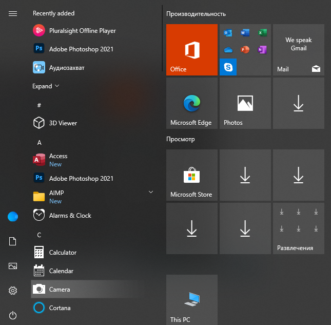

FIRST APPEALING ELEMENT OF WINDOWS 10
In the previous windows versions, the design was adequately acceptable, however, in this model, design is powered with really soft AI and this is resulting a tremendous increase in term of demand
SECOND INTERACTIVE SIDE OF WINDOWS 10
The users are quoting the fact that Windows 10 is much more multi-functional, comparing to older versions of windows. Simplifying, just the task bar is thougt to be a bright example of this.
THE CAPACITY OF ENABLING TO DEAL WITH PROGRAMMING LANGUAGES
It is believed that windows 10 has come with quite well-known pluses and specifically the programming based advantages are also highly favored.
HIGH-RATE OF VIRUS PROTECTION
Windows series, specifically windows 10 has desirable rate of virus protection and it warns you whenever harmful elemment is loaded. As it is shown in the picture below.